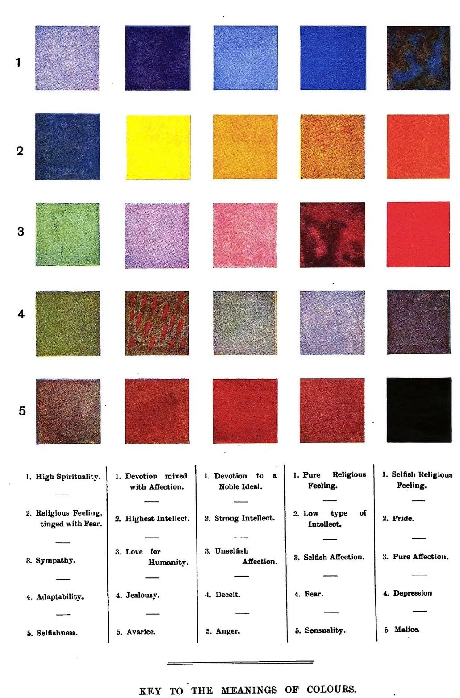

Lighting Design Experiments
Experiments with the Barnard Movement Lab’s ETC Eos lighting console during my 2025–2026 Student Artist-in-Residence program.
Technical stack
- ETC Eos
- OSC
- Theatrical lighting console programming
Gallery
Lighting design experiments
Reflection
From projection to light
Before joining the lab, I hoped to explore how projection might change our embodied experience. But during the first onboarding session, I was struck by the power of light itself.
Projection clarifies the wall, the boundary, while lighting dissolves it, filling the space and drawing participants somewhere borderless. It fills the room not only through the color, but with a deeply embodied energy: like a scent, or like standing inside the chamber of an instrument as it resonates.
